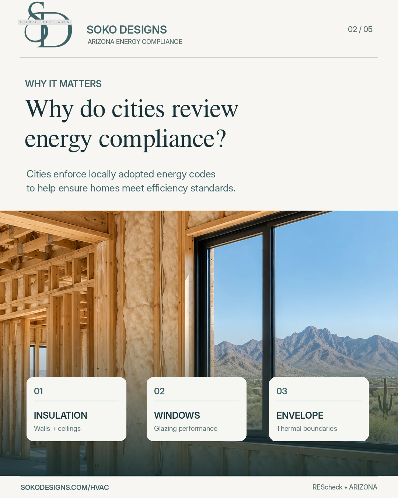
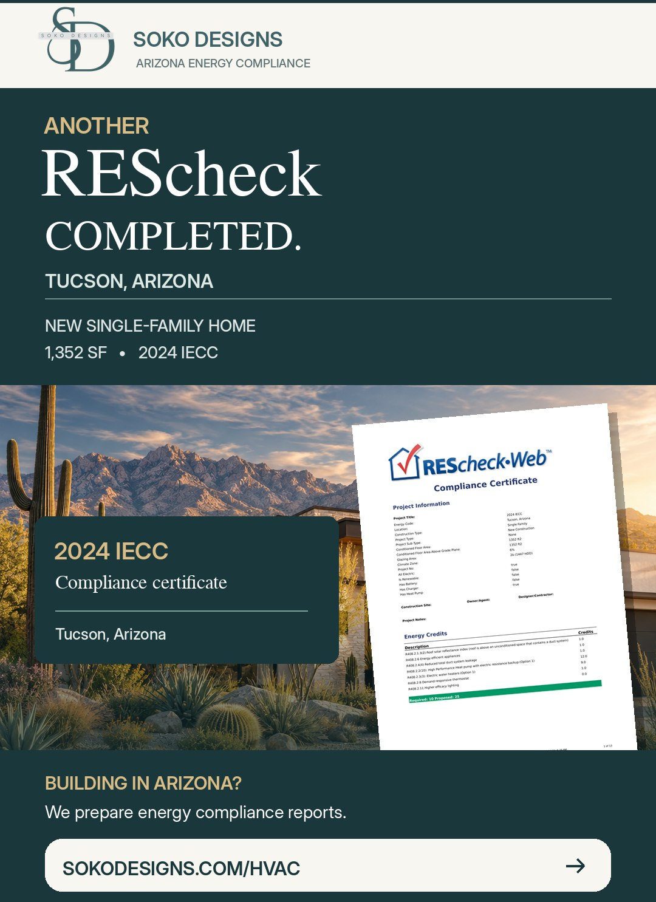
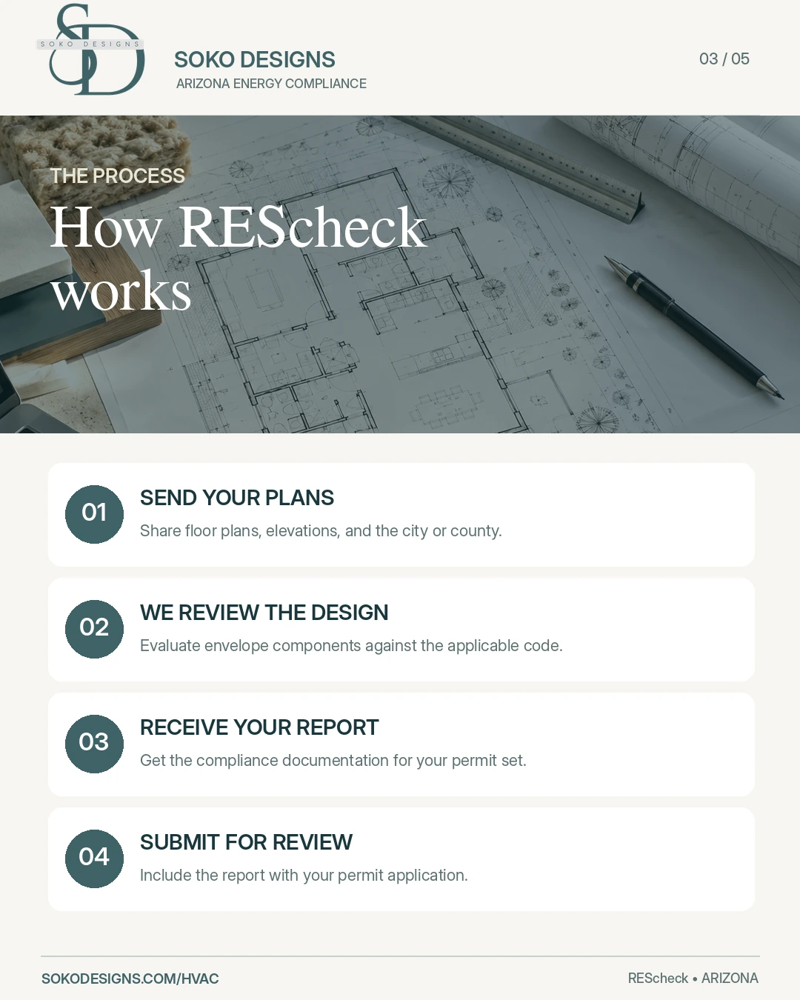
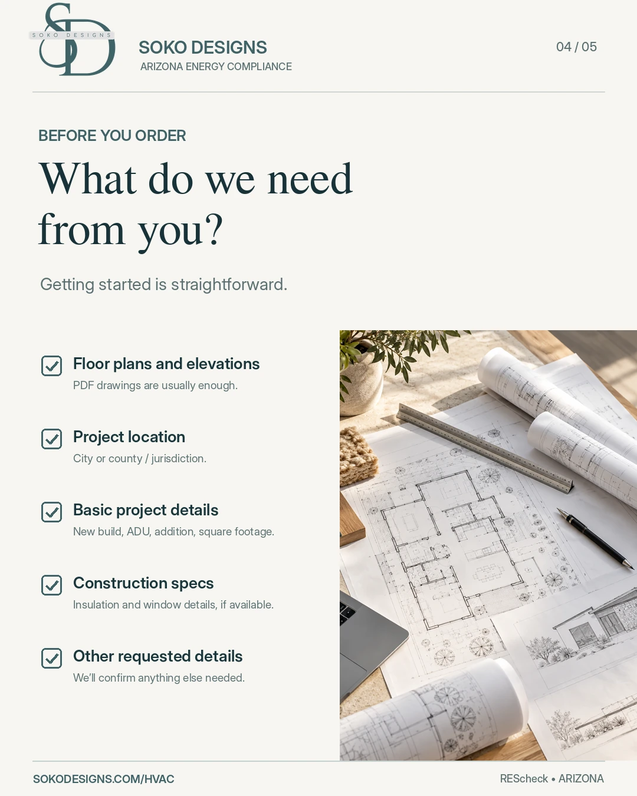
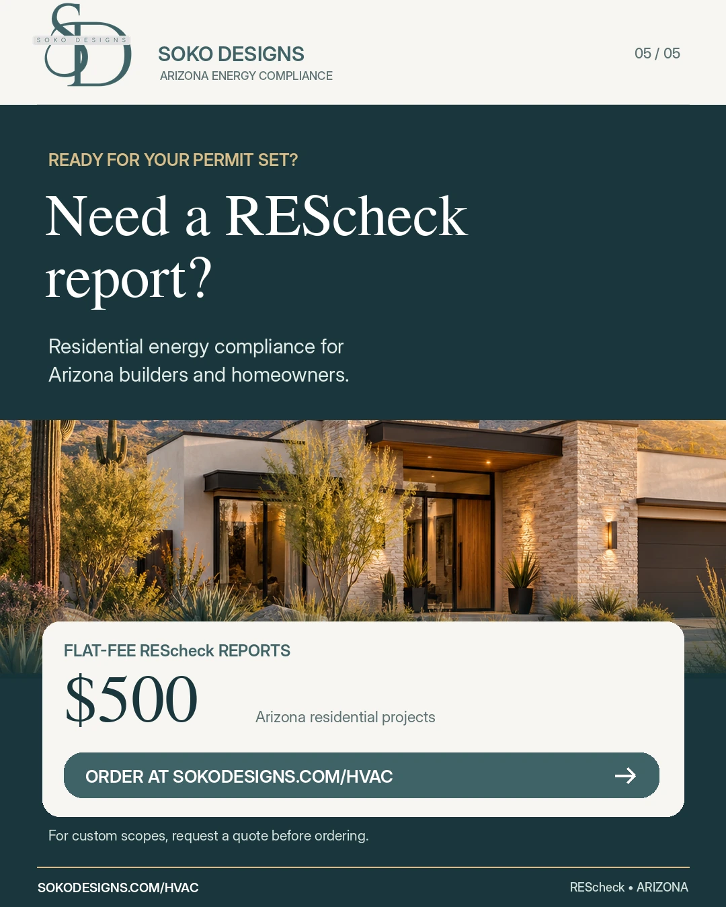

A plan reviewer asks for "a REScheck" and most people have never heard the word. Here is what it actually is, when an Arizona jurisdiction genuinely requires one, and what it costs to have it prepared — plus a change in Tucson that caught a lot of builders off guard this year.
What a REScheck report is
REScheck is free software published by the U.S. Department of Energy. You enter the parts of a building that hold heat in or keep it out — ceiling and wall insulation, slab and floor insulation, window and door performance — and it calculates whether that assembly meets the energy code the jurisdiction has adopted.
The output is a short report plus a signed compliance certificate. That document is what goes into your permit submittal to show the building envelope complies.
It is worth being precise about one thing, because it is the source of most of the confusion:
Cities require energy code compliance. REScheck is one accepted way to document it — not the requirement itself.
The energy code gives you more than one path. You can build to the prescriptive tables exactly as written. You can use the component performance path, which is what REScheck handles and the reason it exists — it lets you give up a little in one assembly and make it up in another. There is also a simulated performance path and an ERI path, both of which involve energy modeling rather than a REScheck printout.
So when somebody says "Arizona requires a REScheck," that is shorthand, and it is not quite true. What is true is that your jurisdiction requires you to demonstrate energy compliance, and REScheck is usually the fastest and cheapest way to do it on a residential project. Some reviewers ask for the REScheck output by name. Others will accept any of the paths. Ask before you assume.
Why cities ask for it at all

Energy code review is about the building envelope — insulation levels, window performance, air sealing, duct location. It sits alongside the structural and life-safety review as one of the boxes a plan reviewer has to check before a permit is issued.
In practice it is one of the easier reviews to clear, and also one of the easiest to get corrections on, because the numbers on the report have to match the numbers on the plans. More on that below.
Arizona has no statewide energy code
This is the part that trips up builders working across more than one city. Arizona does not adopt a residential energy code at the state level. Every city and county adopts its own edition of the International Energy Conservation Code (IECC) on its own timeline, and they are not in sync.
Which means a report prepared for the right code in one city can be the wrong code twenty minutes up the freeway.
| Jurisdiction | Residential energy code (with local amendments) | Effective |
|---|---|---|
| Tucson | 2024 IECC | July 1, 2026 |
| Phoenix | 2024 IECC | August 1, 2025 |
| Mesa | 2024 IECC | January 8, 2026 |
| Scottsdale | 2021 IECC | January 7, 2023 |
Every one of these cities amends the model code when it adopts it, so the edition number alone doesn't tell you the whole requirement. Confirm the edition and the local amendments with the building department before a report is prepared — adoption dates move, and the edition in force is the one that was in effect when your application was received, not when you started designing.
Tucson moved to the 2024 IECC on July 1, 2026
On December 16, 2025, Tucson's Mayor and Council approved the 2024 International Codes, including the 2024 IECC, with an effective date of July 1, 2026.
The detail that matters operationally is how Tucson applies it: permit applications and related submittals received on or after July 1, 2026 must comply with the 2024 codes and Tucson's amendments. Applications submitted before that date continue to be reviewed under the edition in effect when they came in, unless the Building Official approves otherwise.
So the trigger is your submittal date, not your design date and not your groundbreaking date. If you have a Tucson project that sat on the shelf for a few months, the code it gets reviewed against may not be the code you planned it around.
What changed in the 2024 IECC
Two changes are worth knowing about, because they affect what ends up in your report.
The trade-off path got renamed and recalculated. What the 2021 code called the Total UA Alternative is now the Component Performance Alternative. It compares your building's total thermal conductance against a reference building, and the calculation now picks up slab-edge heat loss as well as the usual wall, roof and window assemblies.
There is now an energy credit requirement. On the prescriptive path the 2024 IECC asks for a minimum number of credits drawn from a menu of efficiency measures — better ducts, a heat pump, efficient water heating, a demand-responsive thermostat, higher-efficacy lighting and many more. Hitting your insulation targets is no longer automatically the end of the conversation.
One Arizona-specific note: credit availability depends on climate zone, and the lowest envelope-improvement tier isn't available in zones 0 through 3. Tucson and Phoenix are both zone 2B, so the menu available here is not the same one described in national articles on this topic.
A real example: Tucson, 2024 IECC
Here is what that looks like on an actual report. We recently prepared a residential energy compliance report for a new 1,352 sq ft all-electric single-family home in Tucson under the 2024 IECC. The code required 10 credits. The house earned 25.
| Measure | Credits |
|---|---|
| Reduced total duct system leakage | 12.0 |
| High-performance heat pump with electric resistance backup | 9.0 |
| Roof solar reflectance index | 1.0 |
| Energy efficient appliances | 1.0 |
| Electric water heater | 1.0 |
| Demand responsive thermostat | 1.0 |
| Higher efficacy lighting | 0.0 |
| Total proposed (10 required) | 25.0 |
The useful takeaway for a builder: duct sealing alone carried 12 of the 25 credits, and the heat pump carried another 9. Two decisions did almost all the work. If you are trying to clear the credit requirement without redesigning the envelope, that is where to look first.

Which projects need one
Energy compliance documentation generally comes up on work that creates or changes conditioned space. The specifics depend on your jurisdiction and the compliance path you choose, but the usual candidates are:
How the process works

- You send plans. Floor plans and elevations are the minimum to get started, plus the jurisdiction — that determines the code edition.
- We fill in the rest. Assembly details, insulation values and window performance often come straight off the plans. Where something is missing we can work from standard assumptions, or we will tell you exactly what we need. You are not expected to assemble a specification package before you can order.
- We confirm the applicable code, including local amendments, because Arizona cities amend.
- We run the calculations and prepare the report and signed certificate, formatted for Arizona plan review.
- You submit it with your permit package. If the city comments on the energy documents, that is ours to answer — it is included.

Need a REScheck report? $500, flat.
Residential energy compliance report, envelope and insulation review, signed compliance certificate, and revisions if the city comes back with comments. Prepared for the code edition your jurisdiction is actually on.
What gets a REScheck kicked back
Many energy code corrections are not caused by a design problem at all. They are caused by the energy report and the construction plans disagreeing with each other. That said, some projects genuinely do need design changes to comply — insufficient insulation, windows that miss the required performance, or an assembly that has to be revised. Both happen.
The paperwork ones we see most:
- The report cites the wrong code edition. The most common one, and the most avoidable. See the table above.
- The R-values on the report don't match the wall and roof sections on the plans. If the plans say R-38 and the report says R-30, the reviewer has to ask.
- Window U-factor and SHGC aren't shown on the plans. The report assumes a performance number. The plans need to carry the same one.
- Conditioned square footage doesn't match the floor plan it was supposedly taken from.
- The certificate isn't signed, or the submitted set is missing a page of it.
The consistency problems are the frustrating ones, because they aren't telling you anything is wrong with the building — and they still cost you a review cycle, which in a busy jurisdiction can be weeks.
What it costs
We charge a flat $500 for a residential REScheck report. That covers the envelope and insulation review, the compliance report, the signed certificate, and revisions if the jurisdiction comes back with comments on the energy documents.
It is a flat fee rather than an hourly estimate, so the number you see is the number you pay. Jurisdiction permit fees are separate and go to the city, not to us.
Because this is a document rather than a site-based service, we prepare these for projects anywhere in Arizona — you email plans, we email the report back. Turnaround after we receive plans is usually same or next business day, confirmed when we acknowledge receipt.

Order your REScheck report — $500
Pay online, email your plans, and we'll confirm your turnaround. If your project is unusual or you're not sure which report you need, ask first and we'll tell you straight.
The flat fee covers the report and city comment responses. Redesign work, revisions after you change the building, energy modeling beyond REScheck, and jurisdiction fees are separate.
A REScheck compliance certificate documents energy code compliance. It is not an engineering or architectural stamp, and it is not a permit approval — your jurisdiction issues that. Sources: U.S. Department of Energy Building Energy Codes Program (REScheck and IECC residential compliance paths); City of Tucson Building Codes and the December 16, 2025 Mayor and Council adoption of the 2024 International Codes effective July 1, 2026; City of Scottsdale Building Code (2021 IECC, Ordinance 4576, effective January 7, 2023); published adoption records for Phoenix and Mesa. Arizona has no statewide residential energy code and adoption is local — editions, amendments and effective dates change. Confirm the code edition in force with the jurisdiction before a report is prepared. Credit figures shown are from a single completed SOKO Designs project and are illustrative, not a predictor of any other project's results. Pricing shown is SOKO Designs' flat fee as of October 2026 and is confirmed at checkout.